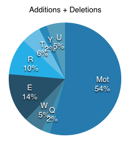
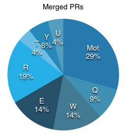

We all know that asking for a raise can be tricky. You need to prove your worth. And this can be tricky as a software engineer - compared to say a sales associate who can tie compensation directly to her sales numbers.
But you can combine various analytics like pull requests merged and commits made to show your value. I did this very thing and it turned out well. The letter follows:
Hi ▮▮▮▮. Wow. It's been an amazing 6 months at ▮▮▮▮▮▮. I've been loving it here working as a Senior Engineer. Thank you for hiring me! I'm writing this to request a formal review of my current salary.
I've enjoyed the team and the work, and I think I've done good work. In many ways, I think it's been above and beyond. Here's why:
I write a lot of code. On core, I've generated 144 commits since May 16th. That is the second most on the team. Plus, I've made +16,500 additions and -8,663 deletions. That is twice the next largest contributor, and, significantly, makes up 54% of the total contributions of our team.
Writing code is just one piece though, I should be shipping real product.
I ship a lot of product. Since May 16th, 124 of my pull requests have been merged to master. That is 20 PRs per month, and it makes up 29% of the team's total pull request productivity.
Furthermore, I worked on two major features for our product - ▮▮▮▮▮▮ and ▮▮▮▮▮▮▮▮▮. These were complex undertakings to implement - far from greenfield. They both had to function simultaneously with old systems, not cause harm to the old systems, and have feature parity. Given these requirements, ▮▮▮▮▮▮▮ released very smoothly and I'm hopeful that ▮▮▮▮▮▮▮▮▮▮ will as well.
But shipping is also just another piece of the puzzle, I should additionally be removing friction for future features. The best way to do that is to leave code better than it was found.
I leave code better than I found it. I've championed, and led by example, the increased use of tests for the team. It has shown. Since May 16th, there's been a 62% increase in specs written (1,243 to 2,013). These add value to the product far into the future.
Furthermore, I took the initiative to introduce real performance tests to the codebase (in the case of ▮▮▮▮▮▮▮▮▮). These should pay dividends when we make refactors to the syncer, and it provides a copyable pattern for performance testing more of our code.
That is my productivity in a nutshell over the last 6 months. These stats don't paint the whole picture of course - for instance we have multiple repos - but I do think they are significant. Add to this that I work well across multiple departments and have taken on added responsibilities, and I think my work has exceeded expectations.
Finally, from research on sites like Comparably, the average salary is around ▮▮▮▮▮▮▮▮ for a similarly skilled engineer. That is X% higher than my current salary of ▮▮▮▮▮▮▮. A X-Y% raise in salary would put my compensation in line with the industry's going rate.
Thanks for reading and taking the time ▮▮▮▮, and looking forward to chatting about it. Let me know if you have questions or would like me to add clarity to anything.
Best,
Mot
I included with the letter a couple charts to make grocking the data easier.
 That's it. It gave concrete talking points when discussing the raise, and I think made things easier for both sides.